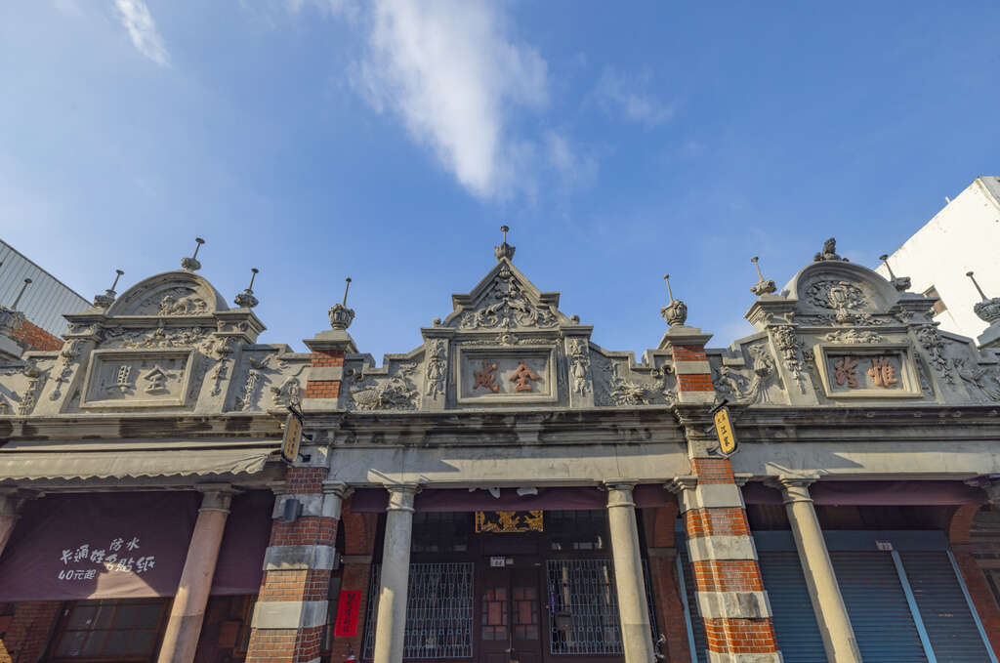
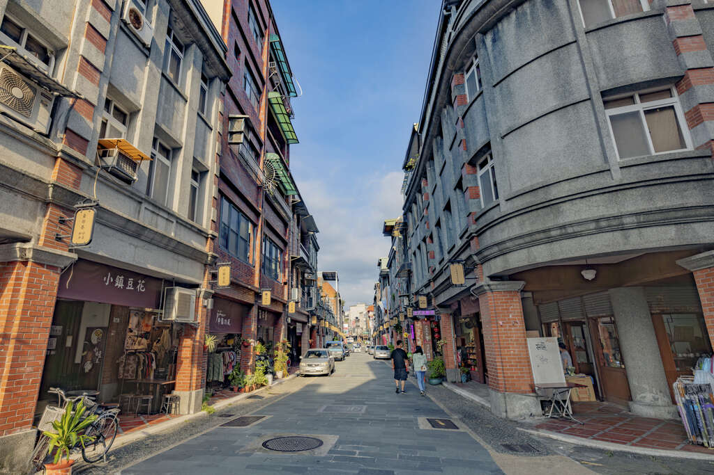

南興落羽松（原 八德落羽松森林）
落羽松紅了，旅人的臉就笑了！每逢冬季寒意至，沿著霄裡大池旁的浮筧街185巷，近3公頃的八德落羽松森林染上瑰麗的漸層色彩
，橙黃、艷紅、藍天白雲與潺潺溪水，總吸引成千上萬的旅人們爭睹這片如印象派畫作的詩意風景。
落羽松屬於杉科植物，因原產於美國所以又稱美國水松，其樹高可長至50公尺，常作為造景植物與建材。與一般的針葉樹不同，
落羽松的針葉會隨著季節入冬而由綠轉紅，最後如羽毛般飄落。桃園境內兩大落羽松打卡熱點﹣大溪落羽松大道﹙原名為石園路﹚
以及南興落羽松，在IG、FB洗版爆紅後，觀賞人潮從未減少過。大溪落羽松大道約種有3百棵落羽松，雙排並列打造出一種清幽美感
。而位於茄苳溪畔的南興落羽松，屬於私人苗圃，近3千棵落羽松拔地而起，有別於大溪｢小而美｣的宜人風光，獨特的壯觀景象增添旅行的驚艷。
注意事項
最佳觀賞期約為12月中至1月底
請勿踩踏氣根、攀折樹枝
開放時間：屬私人土地，開放時間及入園收費依現場公告為主
地 址：桃園市大溪區浮筧街158之1號
服務專線：無

 阿拉寶灣（和平島地質公園）
阿拉寶灣（和平島地質公園）
大溪老街
大溪是桃園最早發展的地方，透過大漢溪小帆船行駛淡水河，與大陸貿易興盛，造就了許多商號與商賈。
日治大正時代流行巴洛克建築風格，和平路、中山路等老街，各商號融合巴洛克式繁飾主義和閩南傳統裝飾圖案，包括希臘山頭、羅馬柱子和中式的魚、
蝙蝠等祈求吉慶的圖案混合，形成一種大溪專有的特色。和平老街因為開發較晚，老屋的保存狀況也較好，街上特色商店林立，十分熱鬧。
大溪老街週邊有大溪橋、李騰芳古宅、寺廟古蹟、武德殿文化古蹟及大溪木藝生態博物館等知名景點，當然更要品嚐老街上傳統的台灣古早味小吃、
體驗台灣童玩，尤其是大溪豆干、月光餅、花生糖、豆花、碗粿、湯圓等，都是不容錯過的台灣道地美食！絕對是來到桃園，感受道地台灣味必去的景點之一！
開放時間：全日開放
地 址：桃園市大溪區和平路、中山路
服務專線：+886-3-3882201


大溪老街